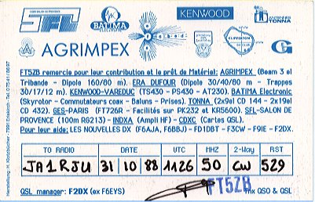

話題の局・QSL
FT5ZB・Amsterdam& St.Paul Is


1988年10月31日から11月2日に入感したAmsterdam IslandのFT5ZB。
3日間のOpenでJA1=11、JA2=24、JA3=9、JA4=7
JA5=3、JA6=2、JA9=1の57局のJA'sとQSO

1988年10月31日から11月2日に入感したAmsterdam IslandのFT5ZB。
3日間のOpenでJA1=11、JA2=24、JA3=9、JA4=7
JA5=3、JA6=2、JA9=1の57局のJA'sとQSO